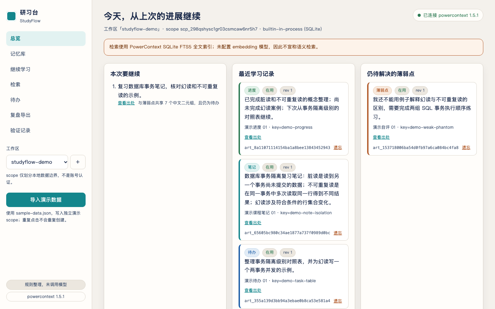
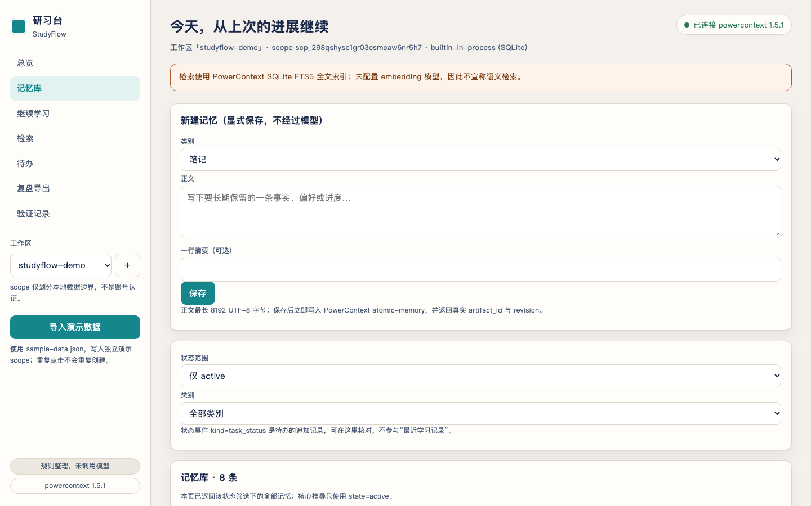
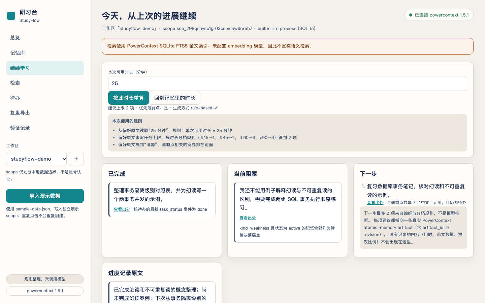
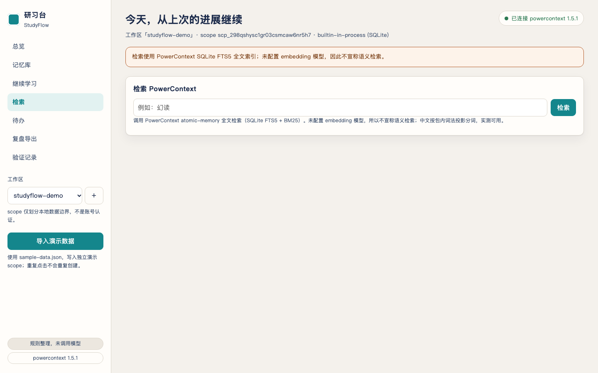
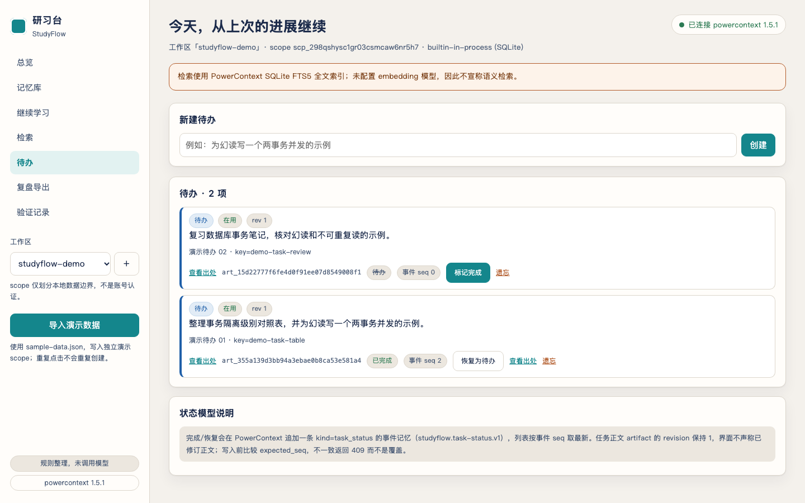
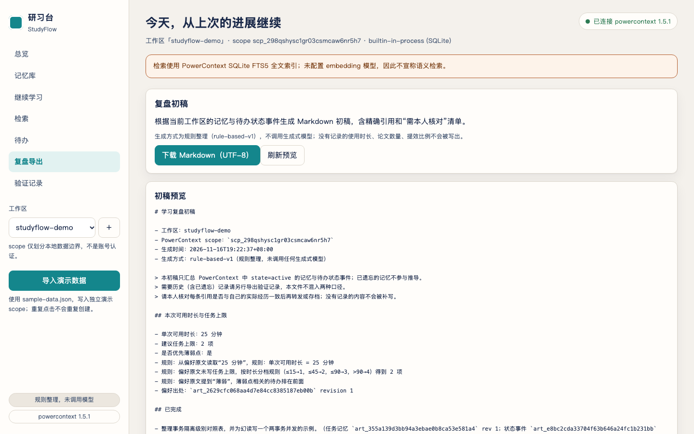
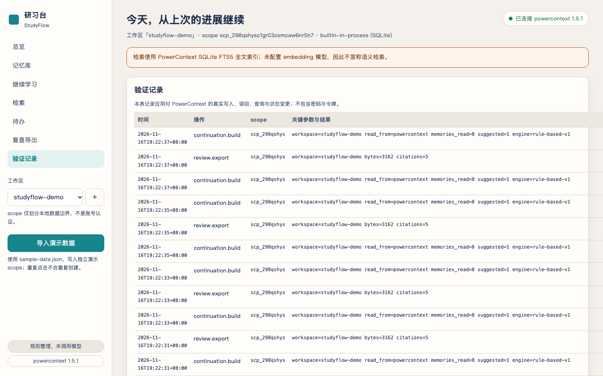
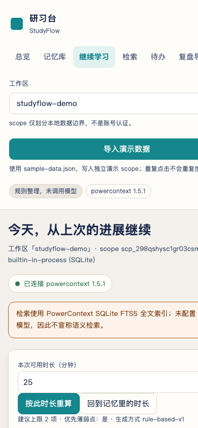

笔记、薄弱点、待办散在一个个聊天会话里，换个窗口就要重讲一遍背景。 研习台用开源组件 PowerContext 把这些内容存成可溯源的记忆，重新打开应用时读回来，生成带出处的继续学习清单与复盘初稿。
从学生与科研人员的真实动作出发，不是从功能清单出发。
上周卡在哪、已经读完哪些材料，全留在上一个会话窗口里，新开窗口等于失忆。
生成的“下一步”看不出依据哪条笔记，也无法回到原文核对，只能整段重写。
说过“一次只学 25 分钟”，下次照旧排 6 个任务，偏好没有参与任何决策。
两个界面改同一条待办，后写的悄悄盖掉前一个，没有任何提示。
阶段总结要从头组织，工具很容易顺手替你补写没有记录过的“成果”。
看不到系统真正写进存储的内容与结果，就无法判断它是真在读写还是只做样子。
每一项都对应界面里的一个页面，也都有一条实测记录。
| 能力 | 实现方式 | 事实边界 |
|---|---|---|
| 记忆持久化 | 正文、待办、状态、偏好全部写入 PowerContext atomic_memory，本地 SQLite 落盘；重启进程后重新读回。 |
浏览器不存主记忆，也不是事实来源。 |
| 可溯源引用 | 每条记忆显示真实 art_… artifact ID、revision 与原文；界面上的建议都能点“查看出处”。 |
不显示不存在的引用。 |
| 继续学习清单 | 读回进度 / 薄弱点 / 偏好，输出“已完成 · 当前阻塞 · 下一步 · 参考记忆”，并写明依据的规则。 | 确定性规则整理，未调用任何生成式模型。 |
| 偏好真的影响结果 | 记忆里写着“一次学 25 分钟”，下一步就最多排 2 项任务，同时给出规则说明与偏好出处。 | 时长可覆盖，覆盖值同样显示。 |
| 检索 | 直接调用 PowerContext 查询接口，中文行为已实测（“幻读”同时命中笔记与薄弱点）。 | 全文检索，不是语义检索：未配置 embedding，实测 embedding_calls=0；查不到就返回空并说明。 |
| 待办与冲突 | 状态以追加式 task_status 事件保存，携带期望序号；旧序号写入返回 409 并提示刷新。 |
1.5.1 无公开正文修订入口，因此不声称“已更新原记忆”；冲突保护只在单进程内有效。 |
| 复盘导出 | 按实际记忆与待办生成 UTF-8 Markdown，逐条带引用，顶部标注“需本人核对”。 | 不补写没有记录的成果、数字或评价。 |
| 验证记录 | 记录应用对 PowerContext 的写入、读回、查询、状态更新与冲突结果，页面直接可查。 | 只记操作与结果，不记密码与令牌。 |
| 工作区隔离 | 一个工作区映射一个 PowerContext scope，导入演示数据写进独立演示 scope。 | scope 是数据选取边界，不是账号认证。 |
| 断开可见 | 连接状态来自真实探测；断开后 /api/health 返回 503，界面显示“读不到”而不是回显旧数据。 |
不提供多用户 / 云端服务承诺。 |
作者本机 Chrome 对运行中的 http://127.0.0.1:8712/ 截图（非设计稿、非示意图）。








需求：Python 3.11 / 3.12、可访问 PyPI。全程只在本机监听 127.0.0.1:8712。
# 1) 取代码（仓库为 oceanbase/powercontext 的赛事分支，项目在 qoder/ 目录） git clone -b studyflow-qoder-20261116 https://github.com/liumengcong/powercontext.git cd powercontext/qoder # 该分支由作者本人推送；若暂时拉不到，直接在你手上的 qoder/ 目录里执行后续命令 # 2) 建环境并装依赖（powercontext[builtin]==1.5.1 等，见 requirements.txt） python3.12 -m venv .venv && source .venv/bin/activate pip install -r requirements.txt # 3) 启动（一条命令也可以：./快速开始.sh） python -m backend.app # → 浏览器打开 http://127.0.0.1:8712/，点左下「导入演示数据」 # 4) 自测：20 项测试（其中 5 项跑真实 PowerContext runtime） python -m pytest tests/ # 5) 端到端演练：启动 3 个真实进程，完成 2 次重启，逐项跑验收样例 1–6 python scripts/acceptance_drill.py # → 证据写入 docs/evidence/<时间戳>/（evidence.json、server-*.log、导出的复盘 md）
数据落在 qoder/data/powercontext.db（SQLite），删除该文件等于清空本机记忆，
因此它不进入版本库。故障排查、依赖版本与接口调用点见
源码目录里的 README.md。
在自己的电脑上体验完整功能。展示页以真实截图和可复现证据介绍项目。
docs/evidence/ 内是脚本真实产出的日志与 JSON，包含真实的 scope / artifact ID。只列实际执行过的命令与结果，未列的一律视为未验证。
| 检查 | 结果 |
|---|---|
| 单元 + 集成测试 | pytest tests/ → 20 passed（5 项为真实 PowerContext runtime，非 mock） |
| 跨进程读回 | 启动 3 个真实进程，使用 SIGTERM 完成 2 次重启，同一 scope 读回进度、偏好与待办状态 |
| 偏好影响下一步 | available_minutes=25 → max_tasks=2，并返回规则说明与出处 |
| 并发保护 | 两个请求同带 expected_seq=5 → [200, 409]，最终只剩一条最新事件；临时去掉应用锁时，同一回归测试实测失败 |
| 中文检索 | 查询“幻读”同时命中笔记与薄弱点；matched_by=["text"]、embedding_calls=0；空结果返回空列表并说明 |
| 导出 | UTF-8，Content-Type: text/markdown; charset=utf-8，3162 字节、12 处 art_ 引用 |
| 工作区隔离 | 新工作区读到 0 条，写入后不混入演示 scope |
| 端到端演练汇总 | 12 项检查、0 失败，证据 docs/evidence/20261116-112831/ |
qoder/）：Apache License 2.0，见仓库 qoder/LICENSE。powercontext[builtin]==1.5.1；官方文档。中文分词依赖 jieba（MIT），停用词表来自 stopwords-iso（MIT），随上游包分发。d647275c308e09b7b623f322a26f5c4e85734fb0（2026-competition-ecosystem）。